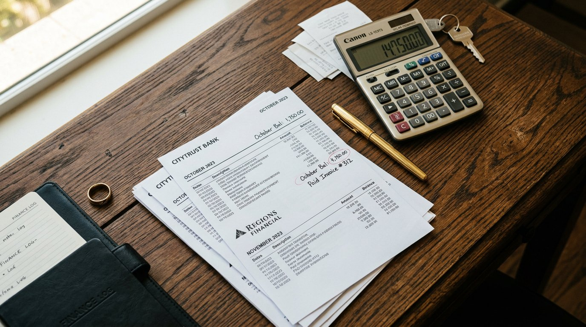

If you write off enough that your tax return understates your real income, the Bank Statement program qualifies you on 12 to 24 months of actual deposits to your business or personal account.

Bank statement loans are the right tool when your business is healthy but your taxable income is low.
Bank statement loans fit specific borrower profiles. Use this checklist.
Every Guarantee Mortgage loan officer walks you through each step in plain English. No surprises, no jargon, no hidden fees.
Self-employed-specific application. We collect 12 to 24 months of statements upfront.
Underwriting calculates a qualifying income from your deposits using the program's specific formula.
Shop with confidence. Bank statement pre-quals are accepted by all major Texas listing agents.
Most bank statement loans close in 30 to 40 days. Clean deposits make this faster.
One short application, 200+ lenders bidding for your business. See your real rate, your real payment, and your closing costs before you commit.